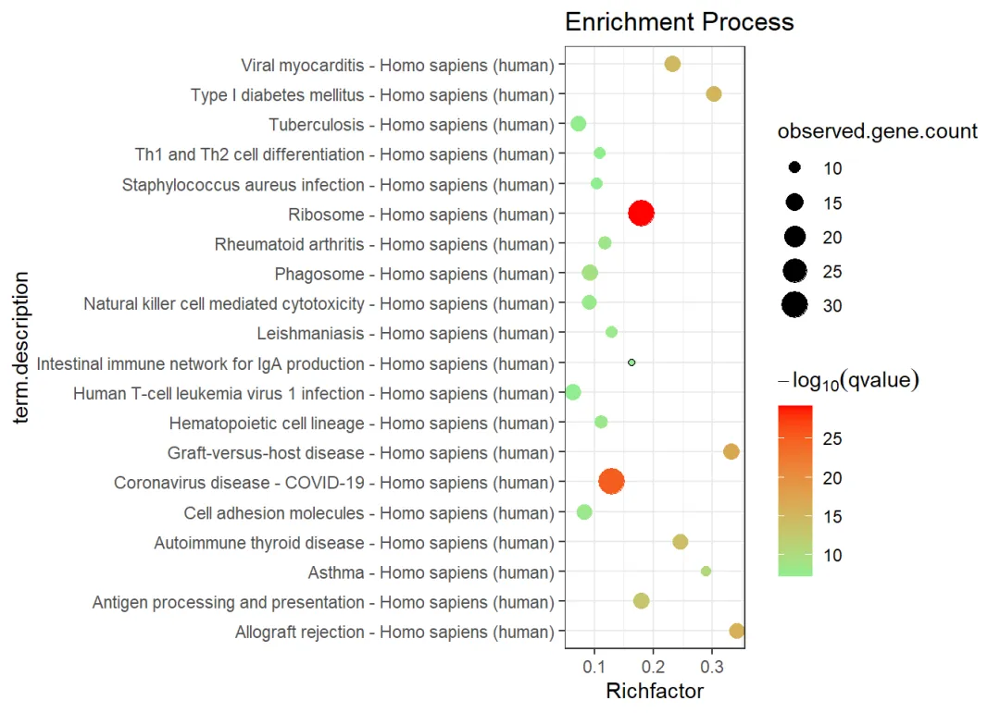

手把手教你做单细胞测序数据分析|7基因集富集分析
原文：https://mp.weixin.qq.com/s?__biz=MzAwMzIzOTk5OQ==&mid=2247500357&idx=2&sn=40034079b771c478b482e849ed4b216c&chksm=9b3cbb15ac4b3203d517ff71073ab0520fe144bc108b7a26f6b17e88fb63a78c5777946618e3#rd 合集：单细胞教程全收录

准备工作
上一讲中我们已经教会了大家如何对多样本的数据做差异分析，拿到差异基因列表。通常情况下差异基因数量是非常多的，显然拿着这么长的list直接撰文是不科学的。这时就需要我们利用一定的“先验”通路，去评估我们获得的差异基因集，从而帮助大家更好的了解自己手中的数据，解释好数据背后的生物学意义，继续向文章迈进!
在线做富集分析DAVID： https://david.ncifcrf.gov/当然，我不是很推荐这种，原因在这里： 都2022年了，还在用DAVID?
PPI同样有这个功能，视频里我们也演示了： String：不仅仅是一个PPI分析平台
GSVA不用再多说了吧，花很多篇幅说过了： 文献阅读系列（九）、一文了解GSVA原理
GSEA的内容也是更过的： 答读者问 （一）单基因究竟能否进行GSEA
单细胞基因集评分可以看这里：一文搞定单细胞基因集评分
视频教程
大家最喜欢的视频环节，看完就可以自己动手啦：
B站同步播出：
https://www.bilibili.com/video/BV1S44y1b76Z?p=8
图文教程
 上一讲中刚教会大家如何进行差异基因的计算及可视化，然而大家拿着成千上百的差异基因直接调研、撰文显然是不现实的，因此需要通过富集分析去揭示这些基因群背后蕴含的生物学意义
上一讲中刚教会大家如何进行差异基因的计算及可视化，然而大家拿着成千上百的差异基因直接调研、撰文显然是不现实的，因此需要通过富集分析去揭示这些基因群背后蕴含的生物学意义
1. 视频及测试文件
1.1 视频教程
视频教程可见B站，方便查阅上下集： 点击跳转
1.2 测试文件
文末扫码下载
2. 代码
suppressWarnings(suppressMessages(if(!require(rvcheck))devtools::install_version("rvcheck", version = "0.1.8", repos = "http://cran.us.r-project.org")))
suppressWarnings(suppressMessages(if(!require(clusterProfiler))BiocManager::install("clusterProfiler")))
suppressWarnings(suppressMessages(if(!require(org.Mm.eg.db))BiocManager::install("org.Mm.eg.db")))
suppressWarnings(suppressMessages(if(!require(org.Hs.eg.db))BiocManager::install("org.Hs.eg.db")))
suppressWarnings(suppressMessages(library(dplyr)))
2.1 准备基因和绘图函数
# 读取marker列表
bcell.marker <- read.csv('第七讲.富集分析/bcell.marker.CSV',row.names = 1)
head(bcell.marker)
## p_val avg_log2FC pct.1 pct.2 p_val_adj SYMBOL
## GZMB 3.186146e-97 -5.507567 0.017 0.961 4.369480e-93 GZMB
## NKG7 1.262672e-94 -6.262287 0.087 1.000 1.731628e-90 NKG7
## PRF1 1.835435e-93 -4.612813 0.029 0.948 2.517115e-89 PRF1
## GZMA 3.036581e-93 -4.466820 0.015 0.929 4.164367e-89 GZMA
## CTSW 3.151498e-93 -4.203776 0.070 0.987 4.321965e-89 CTSW
## CST7 9.767143e-92 -4.380031 0.038 0.948 1.339466e-87 CST7
# 筛选出B细胞marker中p_val_adj最显著的100个基因用于下游分析
mygene <- bcell.marker %>% top_n(n = -100, wt = p_val_adj) %>% rownames()
mygene[1:10]
## [1] "GZMB" "NKG7" "PRF1" "GZMA" "CTSW" "CST7" "GNLY" "FGFBP2"
## [9] "CD247" "FCGR3A"
# 利用org.Hs.eg.db整合基因名、 ENTREZID、ENSEMBL
gene.df <- bitr(mygene,fromType="SYMBOL",toType=c("ENTREZID","ENSEMBL"),
OrgDb = org.Hs.eg.db)
## 'select()' returned 1:many mapping between keys and columns
## Warning in bitr(mygene, fromType = "SYMBOL", toType = c("ENTREZID", "ENSEMBL"),
## : 1% of input gene IDs are fail to map...
# 自定义一个绘图函数，可以通过富集分析返回的数据框绘制气泡图
erich2plot <- function(data4plot){
library(ggplot2)
data4plot <- data4plot[order(data4plot$qvalue,decreasing = F)[1:20],]
data4plot$BgRatio<-
apply(data4plot,1,function(x){
as.numeric(strsplit(x[3],'/')[[1]][1])
})/apply(data4plot,1,function(x){
as.numeric(strsplit(x[4],'/')[[1]][1])
})
p <- ggplot(data4plot,aes(BgRatio,Description))
p<-p + geom_point()
pbubble <- p + geom_point(aes(size=Count,color=-1*log10(qvalue)))
pr <- pbubble + scale_colour_gradient(low="#90EE90",high="red") +
labs(color=expression(-log[10](qvalue)),size="observed.gene.count",
x="Richfactor", y="term.description",title="Enrichment Process")
pr <- pr + theme_bw()
pr
}
2.2 KEGG 与 GO 富集分析
dir.create('第七讲.富集分析')
## Warning in dir.create("第七讲.富集分析"): '第七讲.富集分析'已存在
setwd('第七讲.富集分析')# 设置工作路径
#使用在线数据,可能会受域名限制
R.utils::setOption("clusterProfiler.download.method","auto")#这样可以修改下载协议
# 进行kegg富集分析
ekegg <- enrichKEGG(unique(gene.df$ENTREZID), organism='hsa',
pvalueCutoff=0.05,pAdjustMethod='BH',qvalueCutoff=0.2,
minGSSize=10,maxGSSize=500,use_internal_data=F)
## Reading KEGG annotation online: "https://rest.kegg.jp/link/hsa/pathway"...
## Reading KEGG annotation online: "https://rest.kegg.jp/list/pathway/hsa"...
# 把ENTREZID转换为SYMBOL
ekegg <- setReadable(ekegg,'org.Hs.eg.db','ENTREZID')
write.csv(ekegg@result,'kegg.result.csv')
erich2plot(ekegg@result)
## Warning: 程辑包'ggplot2'是用R版本4.2.3 来建造的

# 保存图片
pdf(file = 'kegg.pdf',width = 10,height = 10)
erich2plot(ekegg@result)
dev.off()
## png
## 2
如果你在做KEGG富集分析时遇到这样的报错：
 那么你的
那么你的clusterProfiler需要更新一下：
remove.packages('clusterProfiler')
devtools::install_github("YuLab-SMU/clusterProfiler")
#######GO over-representation test###########
#进行GO富集分析,GO富集分析分为molecular function、biological process、cell component三个类
ggoMF <- enrichGO(gene.df$SYMBOL, org.Hs.eg.db, keyType = "SYMBOL", ont = "MF",
pvalueCutoff = 0.05, pAdjustMethod = "BH", qvalueCutoff = 0.2, minGSSize = 10,
maxGSSize = 500, readable = FALSE, pool = FALSE)
#输出结果
write.csv(ggoMF@result,'GO.MF.result.csv')
pdf(file = 'GO.MF.pdf',width = 10,height = 10)
erich2plot(ggoMF@result)
dev.off()
## png
## 2
ggoCC <- enrichGO(gene.df$SYMBOL, org.Hs.eg.db, keyType = "SYMBOL", ont = "CC",
pvalueCutoff = 0.05, pAdjustMethod = "BH", qvalueCutoff = 0.2, minGSSize = 10,
maxGSSize = 500, readable = FALSE, pool = FALSE)
write.csv(ggoCC@result,'GO.CC.result.csv')
pdf(file = 'ggoCC.pdf',width = 10,height = 10)
erich2plot(ggoCC@result)
dev.off()
## png
## 2
ggoBP <- enrichGO(gene.df$SYMBOL, org.Hs.eg.db, keyType = "SYMBOL", ont = "BP",
pvalueCutoff = 0.05, pAdjustMethod = "BH", qvalueCutoff = 0.2, minGSSize = 10,
maxGSSize = 500, readable = FALSE, pool = FALSE)
write.csv(ggoBP@result,'GO.BP.result.csv')
pdf(file = 'ggoBP.pdf',width = 10,height = 10)
erich2plot(ggoBP@result)
dev.off()